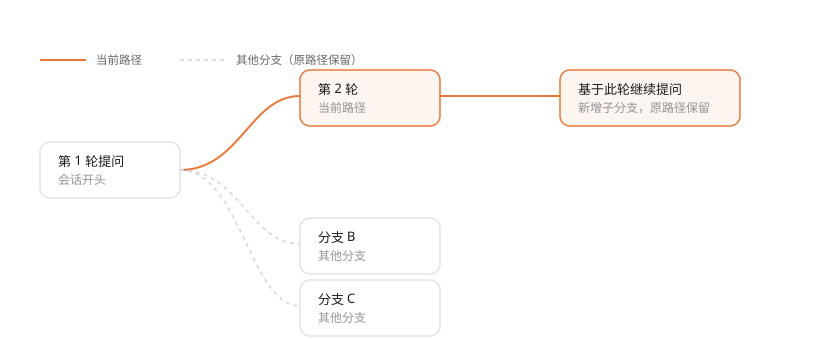

MANUAL · 第 5 章
会话地图与分支追问
地图把对话画成一棵树：想从哪一轮岔出去，就从那里继续问，原路径不会被覆盖。
看地图
从会话顶部打开「会话地图」。父节点在左，卡片向右展开，每张卡是一轮问答。
- 拖动画布空白处平移，滚轮缩放；底部控制条有「缩小」「当前百分比」「放大」「适应全图」「定位当前分支」。
- 卡片右下角的「查看详情 ↗」打开本轮详情，右侧有「问题与回答」与「执行链路」两个页签。
- 顶部搜索框可以搜问题或回答；命中时地图保留祖先节点，方便看清路径。
- 右下角图例区分「当前路径」与「其他分支」；卡片可以折叠后续轮次，便于看整体。
从某一轮继续提问
- 点开要接着问的那张卡片。
- 在详情里点「基于此轮继续提问」，右侧会打开「地图追问」面板。
- 直接提交问题：回答显示在地图内，地图随快照更新；关闭面板或按 Escape 回到地图，分支与草稿都保留。
- 想回到主对话，点「回到聊天位置」。

追问继承会话开头到本轮的历史；在末端追问会延续当前分支，在中间追问会新增一条子分支。 工作区文件与共享记忆仍使用当前状态——它们不随分支回滚。
该轮尚未结束、历史检查点缺失，或会话正在运行 / 等待审批时，追问入口会被禁用，并写明原因。
整理分支
点「整理分支」可以给分支改名，并把同层分支上移 / 下移。改名与顺序只影响显示，不改历史内容， 也不改父子关系。
边界
- 文件与共享记忆不随分支回滚；地图是阅读与追问的入口，不是「时间机器」。
- 当前不支持自由布局、改父关系、智能分类、历史重生成和分支删除。
最后更新 2026-10-19 · 适用版本 v1.0